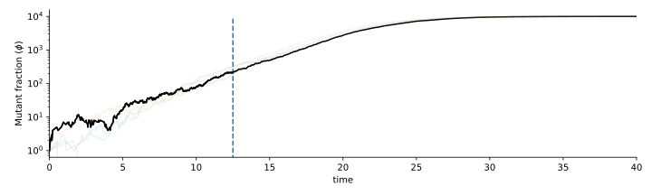
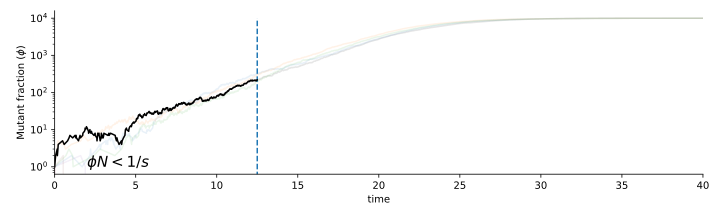
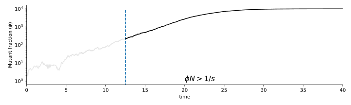
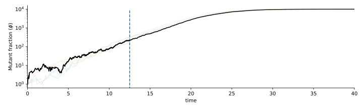
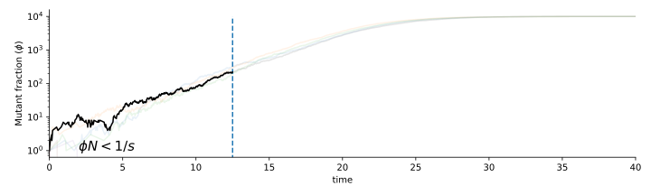
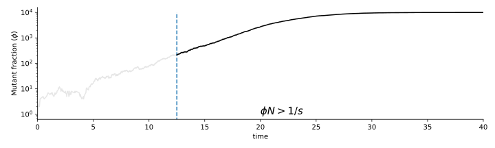

Title
Ethan Levien
Selection acts on phsiological traits?

In the Moran model, natural selection acts on the growth rate, which determines $s$. But how does selection act on single-cell traits?
Evolution in the turbidostat

The turbidostat is a type of Continuous culture in which the population size is kept approximately constant through feedback between an optical density detector and a pump
Evolution in the turbidostat
The basic dynamics in a continous culture can be understood from the ODE model for the number of cells of each genotype $n_i$ and the concentration of a limiting nutrient $c$: \[\begin{aligned} \frac{dn_i}{dt} &= \alpha_i(c)n_i - Dn_i\\ \frac{dc}{dt} &= Dc_0 - D\left(1+\frac{1}{\gamma}\right)c \end{aligned} \]
In the turbidostat the dilution rate $D$ is adjusted to fix the total population size $N = \sum_i n_i$, which means \[ \begin{equation} D = \alpha_i(c)n_i \implies \frac{dD}{dt} \end{equation}\] which can be approximated from the growth bewteen dilutations.
Evolution in the turbidostat
The concentration $c$ has a fixed point $c_0\gamma/(1+\gamma)$ leading to the so-called replicator equations for $\phi_i = n_i/N$: \[ \frac{d\phi_i}{dt} = \phi_i\left(\alpha_i - D - \sum_j \phi_j(\alpha_j-D)\right) \]
With two species \[ \frac{d\phi}{dt} =s\phi(1-\phi) \]
Evolution in the turbidostat
Where does randomness come from?
For any cell, random chance dictates whether it will get expelled from the culture during a dilution event.
Each cell has equal chance $1/N$ to be expelled, so chance mutant is expelled is $\phi$
This leads to SDE \[ \frac{d\phi}{dt} =s\phi(1-\phi) + \sqrt{\frac{\phi(1-\phi)}{N}} \]
Some results about evolutionary dynamics
In evolution, new genotypes are introduced into the population through mutations in single-cells. It is therefore natural to consider the Moran model with the initial condition $\phi = 1/N$.
We can understand the behavoir of a new mutant population by treating seperatly two regimes: one where fluctuations dominate and one where natural selection dominates
Properties of the Moran model
 





We can understand the behavoir of a rate mutant by treating the dynamics seperatly before and after the dynamics become deterministic.
At what mutant fraction does the transition occur? \[ \frac{d\phi}{dt} =s\phi(1-\phi) + \sqrt{\frac{\phi(1-\phi)}{N}} \approx s\phi + \sqrt{\phi/N}\xi \]
We can show that \[ CV = \frac{{\rm std}(\phi)}{\langle \phi\rangle} =\frac{1-e^{-st}}{Ns\phi_0} \to \frac{1}{Ns \phi_0} \] $1/sN$ is called the drift barrier and fluctuations dominate when $\phi_0 < 1/sN$. During this time, \[\frac{d}{dt}\phi \approx \sqrt{\phi/N}\xi\]
At after $\phi>1/Ns$, the $\phi$ grow deterministically: \[\frac{d}{dt}\phi \approx s\phi \implies \phi = \frac{1}{sN}e^{st} \] The mutant clone will take-over the population in a time $\tau_{\rm sw}$, called the sweep time, which satisfies $\phi(\tau_{\rm sw}) = O(1)$ hence \[ \tau_{\rm sw} = O\left(\ln(Ns)/s\right)\]
Properties of the Moran model
So what is the chance the mutant lineage reaches the drift barrier before going extinct?
Below the drift barrier, we can approximate the dynamics over a small time $dt$ by \[ \Delta \phi = \phi(t+\delta)-\phi(t) = \sqrt{\frac{\delta\phi(t)}{N}}Z,\quad Z \sim {\rm Normal}(0,1) \] This will approximation will give us an order-of-magnitude estimate of $\Delta \phi$ before some time $\delta^*$ when $\delta^* = \phi(t)N$.
At $\delta^*$, the mutant fraction will have changed by $\pm \phi(t)$.This means the population has roughly an equal chance of doubling or going extinct over a time period $\delta^*$.
We can repeat this approximation iteratively. After $k$ iterations, we find that the population size is \[ \phi(t_k) = \left\{ \begin{array}{cl} 2^k/N & \text{with prob. $1/2^k$}\\ 0 & \text{with prob. $1-1/2^k$}\end{array}\right. \] where \[ t_k = t_{k-1} + \phi(t_{k-1})N = \sum_j 2^{j} \sim 2^k \implies k = \ln(t)/\ln(2) \]
Plugging $k = \ln(t)/\ln(2)$ we are obtain order-of-magnitude estimates of the mutant size and chance of survival: \[ \phi(t) = \left\{ \begin{array}{cl} t/N & \text{with prob. $1/t$}\\ 0 & \text{with prob. $1-1/t$}\end{array}\right. \] So the population will reach a fraction $1/Ns = t/N$ after a time $t = 1/s$. The chance the survive until this time is $\sim s$.
Selection acts on phsiological traits?
Motivation from single-cell data
Wang et al. Current Biology (2010)
Motivation from single-cell data
A measure of an individual cells viability is its genertaion time. A cell with a shorter generation time will produce few offspring.

Generation time is random, and correlated with many other traits. Natural to think about understanding adaptation in terms of $f(\tau)$
Branching process model
Start with simpler case: exponential growth with age structure
Alfred Lotka (1934), Bellman and Harris (1948) and Powell (1956): Each cell's generation time is drawn independently from a distribution $f(\tau)$.
In the long-term, ${\mathbb E}[N(t)] = Ae^{\Lambda t}$ for some $\Lambda$.
How does the rate at which the population grows depend on the distribution of generation times?
Branching process model
The root cell has two daughters with progenies that grow exponentially at the same rate $\Lambda$.
Let $\tau$ be the first cell's generation time:
Writing the population size at time $t$ in terms of the size of both daughter progenies gives the so-called Euler-Lotka Formula
Branching process in finite population
How can we connect dynamics at the single-cell level to population level dynamics?
\[ \frac{d}{dt} Q({\bf u},{\bf a},{\boldsymbol \lambda},{\bf s},t) + \sum_{k=1}^N \frac{\partial}{\partial a_k} Q({\bf u},{\bf a},{\boldsymbol \lambda},{\bf s},t) = - Q({\bf u},{\bf a},{\boldsymbol \lambda},{\bf s},t)\left(D+ \sum_{k=1}^N \gamma_{u_k}(a_k,\lambda_k,s_{b,k})\right) \] along with the boundary conditions \[ Q(S_{k,u_v}({\bf u}),S_{k,0}(S_{v,0}({\bf a})),{\boldsymbol \lambda}, S_{k,s_{b,v}e^{\lambda a_v}/2}(S_{v,s_{b,v}e^{\lambda a_v}/2}({\bf s})),t)\\ \quad\quad= \frac{g(\lambda_k)g(\lambda_v)}{N}\int\int \gamma_{u_v}(a_v,\lambda_v,s_{b,v}) \times Q({\bf u},{\bf a},S_{v,\lambda_v'}S_{k,\lambda_k'}(({\boldsymbol \lambda})),{\bf s},t)d\lambda_k'd\lambda_v'.\]
In these equations, $g(\lambda)$ is the distribution of single-cell growth rates and $\gamma$ is the division rate: \[ \gamma_i(a,\lambda,s_b) = \frac{\int \int\, d\lambda\, ds_b\, f_i(a|\lambda,s_b)}{1- \int_0^a\int \int\, d\lambda\, ds_b\,da'\, f_i(a'|\lambda,s_b)} \]
Bridging-scales
We don't really care about $Q$ though! we are interested in the behavoir of the mutant fraction $\phi$.
Question: can we coarse-grain to get an effective SDE? If so, what are the parameters?
Let's start by assuming a large mutant fraction with long-term growth rate $\Lambda_m$ competing with resident population with growth rate $\Lambda_r=1$.
When $\phi$ is not "too small", we can approximate \[ \frac{d}{dt}\phi = \frac{1}{N}\frac{d}{dt}m - \frac{\phi}{N}\frac{d}{dt}N = \Lambda_m \phi - \phi(\Lambda_m\phi +\Lambda_r (1-\phi) ) = s\phi(1-\phi) \]
We might guess that the corresponding SDE is something like \[ \frac{d}{dt}\phi = s_{\rm eff}\phi(1-\phi) + \sqrt{\phi(1-\phi)/N_{\rm eff}}\xi \] This would imply $p_{\rm fix } \sim s\frac{N_{\rm eff}}{N}$
Nuetral dynamics
To explore the effects of age-structure we focus on the simple case where generation times are drawn independently from a Gamma distribution \[ f(\tau) = \frac{\beta^{-\alpha}e^{\tau/\beta}\tau^{\alpha-1}}{\Gamma(\alpha)} \] This has the property that it interpolates between perfectly deterministic genertaion times and exponential case.
Nuetral dynamics
We can show that in the case ${\rm CV} \approx 0$, \[ {\rm var}(\phi) \approx \frac{3\ln(2)}{8N}t \]
This would suggest that $N_{\rm eff} = 4/3\ln(2)N$ and therefore $p_{\rm fix} \sim
The coalescent
We can understand the different with coelecent theory
Fixation probability
We can show \[ p_{\rm fix} = \frac{2}{{\rm CV}_{\tau}^2}\left(1-2^{-{\rm CV}_{\tau}^2} \right)s + O(s^2).\]
Fixation probability
Notice that as ${\rm CV}\to 0$, we obtain $p_{\rm fix} 2\ln(2)s \ne N/N_{\rm eff}s$.
We cannot capature the dynamics by rescaling Moran SDE -- connection between genetic drift and fixation breaks down.
The Euler-Lotka equation
We have derived the the Euler-Lotka equation.
If all cells live for exactly a time $\tau$, then $N(t) = 2^{t/\tau}$, so the rate of exponential growth is
Jensen's inequality tells us
If we fix the average generation time then variability will increase the rate of growth.
Motivation from single-cell data

Eldar and Elowitz, Nature (2010)
Generalized Euler-Lotka Formula
The Euler-Lotka formula has an elagent generalization to the case where cell's generation times are correlated with their ancestors (Lebowitz et al., 1974): where $\color{rgb(20, 116, 111)}{f_{\rm tree}(\tau)}$ is the distribution of generation times taken over all cells throughout the history of an exponentially growing population.
In general $\color{rgb(20, 116, 111)}{f_{\rm tree}(\tau)} \ne \color{rgb(205, 88, 73)}{f(\tau)}$
$\implies$ does not connect growth rate to lineage dynamics!